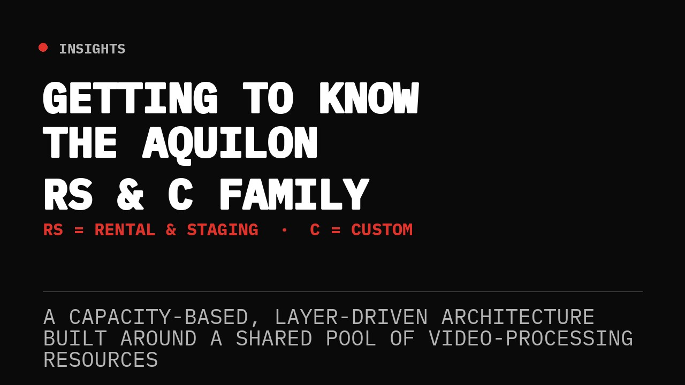
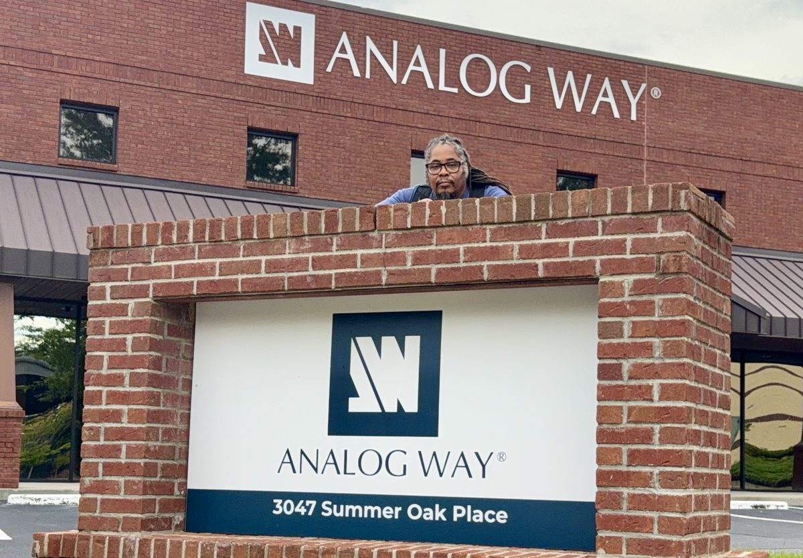
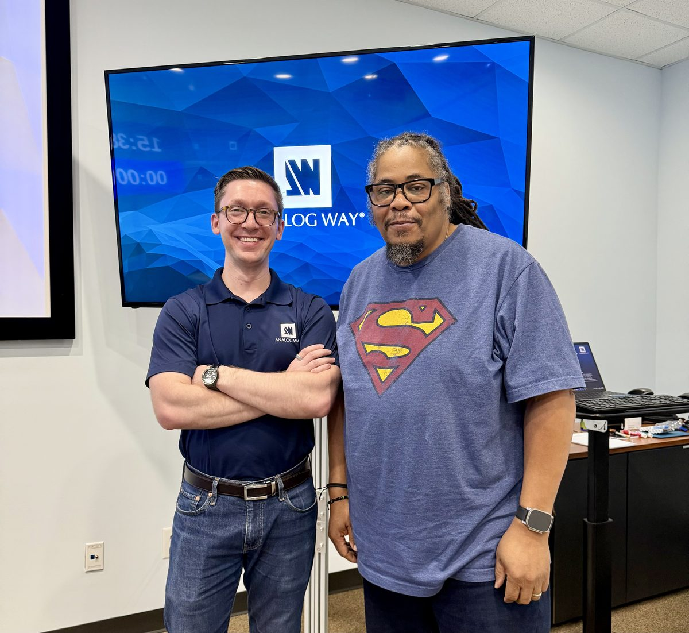
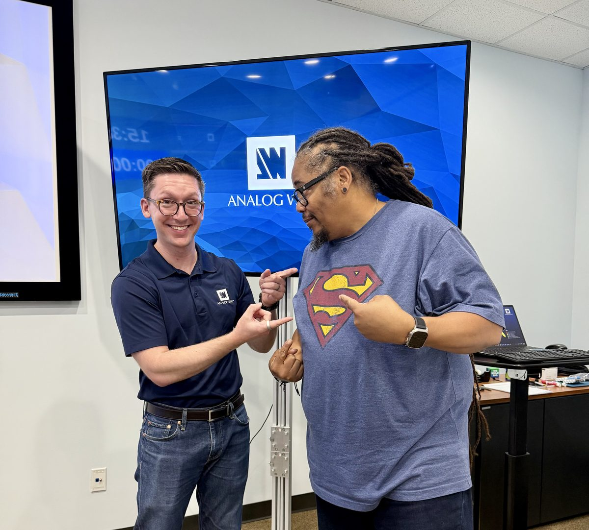

In order to understand it, I flew to Atlanta, GA, then commuted an hour to Buford, GA, for five days of Level One to Three training and certification at the Analog Way Academy, taught by Carl Houde. I've been operating in the Analog Way ecosystem for a while now — Ascender was where I did a lot of my early work. Fast forward to 2024 and 2025, and I started seeing more requests for Aquilon operators. Since I'd already spent real time on Ascender, the platform itself wasn't the hard part. What I hadn't done yet was the official factory training — and as freelancers do, I put it off. Kept putting it off, honestly, until this past August.



Analog Way HQ, Buford, GA — with instructor Carl Houde.
As the industry kept shifting toward more LED wall productions, the need for the real, factory-backed version of this knowledge got harder to ignore. So I made the trip. Five days, Levels 1 through 3, and it was one hundred percent worth the drive to Buford. Carl was the right person for the five days — it's almost as if I'd vetted him at InfoComm. Ha, ha. Here's what I actually walked away with.
The RS & C Family, Decoded
Start with the naming, because it tells you everything about how Analog Way thinks about this lineup. The RS line — RS alpha, RS1, and RS2 in a 4RU chassis, RS3 and RS4 in 5RU, RS5 and RS6 in 6RU — stands for Rental & Staging: preconfigured models built to cover the most common show requirements right out of the box. The C line — C, C+, and Cmax — stands for Custom: fully modular chassis where you build the input, output, and processing configuration yourself, card by card, to fit a specific install or a specific show.
Neither line is "better." They're answers to two different questions. RS answers "what's the fastest way to get a capable, well-balanced box in a truck." C answers "what does this specific room, this specific LED wall, this specific signal chain actually need."
Capacity: The Core Concept
Everything about how these chassis get sized and specced comes back to one idea: capacity. Layers, image slots, inputs, and outputs all get a capacity number, and that number is a visual shorthand for bandwidth — capacity 1 covers up to Dual-Link, capacity 2 covers up to 4K, capacity 4 covers up to 5K. It's not a spec you memorize and forget. It's the number that determines whether a given layer can actually display the source you're trying to put in it. A capacity 1 layer physically cannot carry a 4K source, the same way a capacity 2 image slot can't hold a 5K image without disabling the slot next to it to borrow its headroom.
"It's a capacity-based, layer-driven architecture, built around a shared pool of video-processing resources."
That shared pool has a name, actually — two names. VPUs, Video Processing Units, govern how many screens, layers, and outputs a chassis can drive. IPUs, Image Processing Units, govern how many image slots it can hold. An RS1 ships with a single VPU and a single IPU. Step up to an RS4 or RS5 and you're at three VPUs and two IPUs. A fully loaded Cmax can carry up to four VPUs and two IPUs. Every layer count, every screen count, every input and output ceiling in the spec sheet is downstream of those two numbers.
PGM vs. AUX: Where the Resources Actually Go
Outputs on an Aquilon get assigned to one of two screen types, and the distinction matters more than it looks on paper. A Program (PGM) screen — one or more outputs arranged into a canvas, with a user-defined layer count and transition types — consumes processing resources out of that shared VPU/IPU pool. An Auxiliary (AUX) screen is different: a single output with a hardware-limited number of layers, and it consumes none of that shared pool at all. AUX screens are what you reach for on record feeds, confidence monitors, overflow screens, green rooms — anywhere you need a clean output without eating into the budget you need for the main canvas.
Choosing the Right Box for the Job
This is where the certification actually earns its keep, because on paper the spec sheet is just a wall of numbers — but once you understand capacity, VPUs, and IPUs, that wall of numbers turns into a sizing tool. An RS1 gives you 1 PGM plus 1 AUX at capacity 1, or up to 8 PGM screens at capacity 1 if you're not touching AUX at all. An RS4 or RS5 gives you 6 PGM plus 2 AUX at capacity 1, scaling down to 24 layers at capacity 1 if you push everything into a single canvas. Cmax, fully loaded, tops out at 8 PGM plus 4 AUX and up to 32 layers at capacity 1.
- Screens needed: how many PGM canvases and AUX feeds does the show actually require?
- Capacity required: what resolution are the sources — Dual-Link, 4K, or 5K — and what does that cost in VPU budget?
- Layer count: how many simultaneous layers does the composite actually need, at the capacity those sources demand?
- RS vs. C: does a preconfigured RS model already fit that math, or does the show need a Custom-built C chassis to hit it?
Get those four questions right before the load-in and definitely before the truck ever leaves the shop, and you've picked the right box. Get them wrong, and you find out live, mid-show, that you're out of layer budget on the one screen that matters.
Worth the Trip
I won't walk through all my notes on Levels 1 through 3 here — if you're a seasoned freelance op or an owner-operator who's been putting off the same trip I put off, go make it. The factory training doesn't just teach you the menus. It teaches you the architecture beneath the menus, and once you actually understand capacity and the VPU/IPU pool it all draws from, the whole platform stops feeling like a black box and starts feeling like a tool you can size, or help size correctly, every time before you ever get to the venue. One more thing worth knowing: Carl is changing positions soon, and there are only a few classes left on the 2026 schedule with him teaching. If you've been on the fence, that's a real reason to stop sitting on it.
Aquilon is one leg of the Trilogy. Buford is why the leg finally stands on its own — same reason I needed to be Ready When the Call Comes.